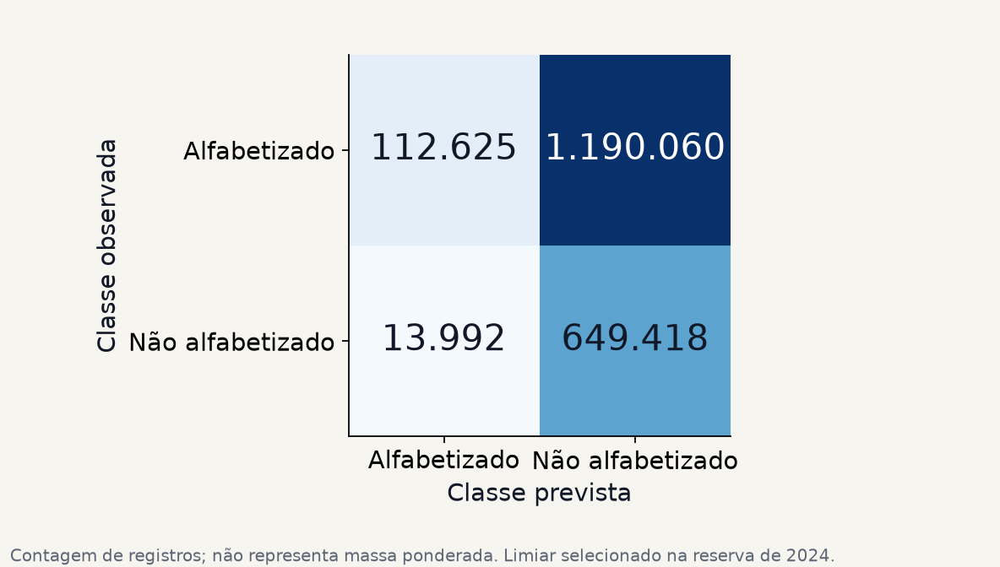
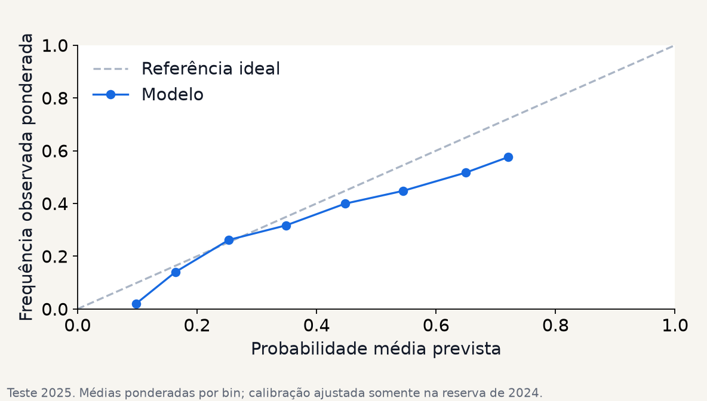
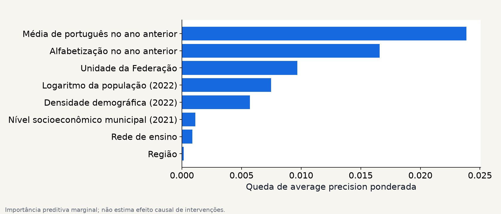

FIAP · Fase 3 · Relatório técnico · 01
Predição contextual de alfabetização
Classificação por aluno, análise municipal e interpretação dos resultados para apoiar a investigação educacional.
AP semelhante ao baseline contextual; não houve ganho demonstrado. Modelo: 0,4591; baseline: 0,4596. Diferença observada: -0,000483; IC 95%: [-0,002943; 0,001808].
Continuidade do projeto
A fase 3 reconstrói localmente a camada Gold, seguindo a linhagem e os contratos da fase 2 e incorporando o histórico necessário à análise.
Reprodução da análise
As configurações, as fontes e os resultados completos acompanham o repositório, identificados pela execução run-c0dde53efb206a89.
FIAP · Fase 3 · Relatório técnico · 02
Dados, cobertura e granularidade
As avaliações estaduais de 2023–2025 oferecem rótulos de alfabetização do segundo ano. O contexto reúne indicadores municipais anteriores, INSE 2021 e população/densidade do Censo 2022.
| Unidade | Conjunto | Registros |
|---|---|---|
| Alunos | development | 1.520.992 |
| Alunos | calibration | 330.836 |
| Alunos | test | 1.966.095 |
| Municípios | development | 4.354 |
| Municípios | reserve | 1.094 |
| Municípios | test | 5.500 |
Regras de elegibilidade
Alunos do segundo ano, redes estadual e municipal, rótulo oficial válido e peso finito positivo. As contagens completas de filtros e perdas de contexto pertencem ao relatório de qualidade da execução.
Ausências com significado
Ausência estrutural em 2023, avaliação não realizada, supressão, erro de leitura e falta de correspondência são situações distintas. O identificador mascarado de escola não serve para cruzamento com o Censo Escolar.
Metas mantêm texto original, operador e limite. Uma meta estritamente maior que 80 não é atingida por resultado igual a 80.
FIAP · Fase 3 · Relatório técnico · 03
Protocolo de validação
| Etapa | Dados | Decisão permitida |
|---|---|---|
| Desenvolvimento | 2024 com contexto 2023 | Atributos, modelos e hiperparâmetros |
| Validação cruzada | Cinco folds por município, nos 80% de desenvolvimento | Comparação de candidatos |
| Reserva | 20% dos municípios de 2024 | Calibração, limiar e resíduos municipais |
| Teste final | 2025 com contexto 2024 | Avaliação do protocolo congelado |
O pré-processamento integra o pipeline e aprende somente no treino. A classificação usa pesos no ajuste, seleção, calibração e métricas. O modelo municipal atribui o mesmo peso a cada município.
Prevenção de vazamento
Proficiência individual, respostas, gabaritos, presença, preenchimento, caderno, identificadores, resultados contemporâneos e as nove proporções indisponíveis em 2023 ficam fora dos atributos principais. A defasagem exige o ano anterior exato.
O backtest utiliza as versões atuais das fontes. Não foi verificado se essas mesmas versões estavam disponíveis no instante histórico da previsão.
FIAP · Fase 3 · Relatório técnico · 04
Classificação: resultados do teste
Modelo selecionado: random_forest. Limiar: 0,185. Classe positiva: não alfabetizado.
| Métrica | Modelo | Baseline contextual |
|---|---|---|
| Average precision | 0,459 | 0,460 |
| ROC-AUC | 0,638 | 0,643 |
| Precisão | 35,8% | 36,3% |
| Recall de risco | 98,0% | 97,3% |
| F1 | 0,525 | 0,529 |
| F2 | 0,728 | 0,728 |
| Brier | 0,217 | 0,219 |

Métricas ponderadas no teste temporal de 2025. Valores maiores de AP, ROC-AUC, F1 e F2 são melhores; para Brier, valores menores são melhores.
FIAP · Fase 3 · Relatório técnico · 05
Erros e calibração


O limiar F2 sinaliza 93,56% dos registros (contagem sem pesos). A baixa seletividade exige avaliar a capacidade de atendimento.
A matriz em contagens não é uma matriz de massas ponderadas. Probabilidades calibradas não dispensam validação da capacidade de atendimento e dos custos de erro.
FIAP · Fase 3 · Relatório técnico · 06
Municípios e metas
Modelo selecionado: hist_gradient_boosting. Uma linha por município, ano e rede municipal; comparação com persistência.
| Medida | Teste 2025 |
|---|---|
| MAE | 11,58 p.p. |
| RMSE | 14,73 p.p. |
| R² | 0,182 |
| Cobertura da banda exploratória | 77,3% |
| Largura média da banda | 38,71 p.p. |

A banda dos quantis 5–95 tem cobertura observada de 77,33% frente ao nominal exploratório de 90%. Há subcobertura no teste; a banda não garante proteção futura.
As bandas usam resíduos da reserva, após congelar a seleção. A cobertura em 2025 é observada; não garante cobertura futura. Projeções de 2026 usam artefato reajustado distinto daquele avaliado em 2025.
FIAP · Fase 3 · Relatório técnico · 07
Interpretação e aplicação estratégica

Fatores relevantes
Importância preditiva descreve a relação com o comportamento do modelo. Não estima o efeito causal de alterar uma política pública.
Municípios para investigação
| Código IBGE | UF | Projeção 2026 | Meta | Diferença |
|---|---|---|---|---|
| 4319604 | RS | 44,3% | >= 80,0% | -35,7 p.p. |
| 4304507 | RS | 45,5% | >= 79,8% | -34,3 p.p. |
| 4304408 | RS | 48,2% | >= 79,2% | -31,1 p.p. |
| 4314209 | RS | 42,7% | >= 73,4% | -30,7 p.p. |
| 4317707 | RS | 45,9% | >= 76,4% | -30,5 p.p. |
Regiões semelhantes são examinadas pela clusterização descritiva. Priorizações precisam ser combinadas com conhecimento local, cobertura dos dados e avaliação das intervenções.
FIAP · Fase 3 · Relatório técnico · 08
Limitações, reprodução e fontes
- Os resultados individuais refletem o contexto territorial e não constituem diagnóstico pedagógico.
- O backtest utiliza as versões disponíveis das fontes; sua disponibilidade nas datas históricas não foi verificada.
- Medianas e escalas foram ajustadas sem pesos no desenvolvimento. Treinamento, calibração e métricas individuais utilizam os pesos oficiais.
- Os intervalos descrevem a variabilidade entre municípios, condicionada aos dados observados; não reproduzem todo o desenho amostral oficial.
- A importância preditiva descreve associações e não estima efeitos causais de políticas públicas.
- As projeções de 2026 ainda não têm avaliação independente. Os cenários de 2027–2030 mantêm a taxa projetada para 2026 e não são previsões validadas desses anos.
- As bandas históricas não garantem a mesma cobertura em anos futuros.
Reprodução
O repositório documenta o ambiente, os comandos, o manifest de fontes e as verificações. A reprodução confere os hashes das fontes. Atualizações das entradas geram uma nova versão dos resultados.
https://github.com/kevinbds/tech-challenge-fase3
Fontes
Fontes: INEP AEEB 2023–2025; metas oficiais; INSE 2021; IBGE Censo 2022.
Referências metodológicas: CRISP-DM e documentação das bibliotecas do projeto. O repositório reúne os contratos dos dados e o protocolo de avaliação.
FIAP · Fase 3 · Relatório técnico · 09
Cenário explícito · 2027–2030
Manutenção da taxa prevista para 2026 em 2027–2030. Hipótese explícita, sem novo treino, sem previsão validada ou garantia futura.
| Ano | Atingem | Não atingem | Sem meta | Sem projeção |
|---|---|---|---|---|
| 2027 | 3016 | 2319 | 165 | 0 |
| 2028 | 2615 | 2720 | 165 | 0 |
| 2029 | 2191 | 3144 | 165 | 0 |
| 2030 | 1749 | 3586 | 165 | 0 |
Comparação sem arredondar: 80 não satisfaz uma meta estritamente maior que 80. Metas ausentes não são preenchidas. A população é limitada às linhas da projeção de 2026.
Todos os municípios e a composição por UF estão em scenarios.json e scenarios.csv, também incluídos no ZIP.
FIAP · Fase 3 · Relatório técnico · 10
Clusters · composição territorial
Composição descritiva dos grupos; não demonstra efeito causal nem homogeneidade de toda a região.
5500 municípios atribuídos; 0 sem correspondência regional. Mostrados 12 de 19 registros cluster/região; restantes no JSON.
| Cluster | Região | Municípios |
|---|---|---|
| 0 | Centro-Oeste | 103 |
| 0 | Nordeste | 97 |
| 0 | Norte | 41 |
| 0 | Sudeste | 531 |
| 0 | Sul | 340 |
| 1 | Centro-Oeste | 320 |
| 1 | Nordeste | 239 |
| 1 | Norte | 67 |
| 1 | Sudeste | 909 |
| 1 | Sul | 778 |
| 2 | Centro-Oeste | 43 |
| 2 | Nordeste | 1445 |
Todos os municípios e a composição por UF estão em scenarios.json e scenarios.csv, também incluídos no ZIP.
FIAP · Fase 3 · Relatório técnico · 11
Clusters · caracterização dos perfis
Valores agregados observados; atributos distinguem os perfis sem identificar efeitos de intervenções. Mostrados até 8 perfis; demais valores completos no JSON.
| Cluster | Municípios | Perfil observado |
|---|---|---|
| 0 | 1112 | {"taxa_alfabetizacao":64.45183453237411,"media_inse_2021":5.160372050816696,"log_populacao_2022":10.833511562… |
| 1 | 2313 | {"taxa_alfabetizacao":81.86006485084307,"media_inse_2021":5.066513844757149,"log_populacao_2022":8.6695767845… |
| 2 | 2034 | {"taxa_alfabetizacao":64.78542772861357,"media_inse_2021":4.345627791563275,"log_populacao_2022":9.5279291601… |
| 3 | 41 | {"taxa_alfabetizacao":55.890487804878056,"media_inse_2021":5.040487804878048,"log_populacao_2022":13.05035313… |
Todos os municípios e a composição por UF estão em scenarios.json e scenarios.csv, também incluídos no ZIP.
FIAP · Fase 3 · Relatório técnico · 12
Síntese · Cobertura por registro de ano/UF · 1
167 itens nesta seção; 24 exibidos; 143 itens adicionais somente no apêndice externo. Cada candidato ou grupo ocupa uma linha.
| Ano / UF / registro | Contagens e cobertura |
|---|---|
| cobertura | {"snapshot_id":"local-f903329983a639b4","manifest_hash":"f903329983a6… |
| municipal_rows_by_year_network[0] | {"ano":2023,"rede":"estadual","rows":1149} |
| municipal_rows_by_year_network[1] | {"ano":2023,"rede":"municipal","rows":5448} |
| municipal_rows_by_year_network[2] | {"ano":2023,"rede":"publica","rows":4950} |
| municipal_rows_by_year_network[3] | {"ano":2024,"rede":"estadual","rows":1086} |
| municipal_rows_by_year_network[4] | {"ano":2024,"rede":"municipal","rows":5448} |
| municipal_rows_by_year_network[5] | {"ano":2024,"rede":"publica","rows":5516} |
| municipal_rows_by_year_network[6] | {"ano":2024,"rede":"total","rows":398} |
Detalhamento agregado integral: JSON da execução, CSV de campos e apêndice HTML externo. Os mesmos arquivos acompanham o ZIP em reports/. O HTML usa arquivos locais; os links do PDF apontam para o repositório. Os anexos preservam os valores completos do arquivo de resultados.
FIAP · Fase 3 · Relatório técnico · 13
Síntese · Cobertura por registro de ano/UF · 2
167 itens nesta seção; 24 exibidos; 143 itens adicionais somente no apêndice externo. Cada candidato ou grupo ocupa uma linha.
| Ano / UF / registro | Contagens e cobertura |
|---|---|
| municipal_rows_by_year_network[7] | {"ano":2025,"rede":"estadual","rows":1069} |
| municipal_rows_by_year_network[8] | {"ano":2025,"rede":"municipal","rows":5500} |
| municipal_rows_by_year_network[9] | {"ano":2025,"rede":"publica","rows":5553} |
| municipal_rows_by_year_network[10] | {"ano":2025,"rede":"total","rows":294} |
| students.2024 | {"raw_rows":2120560,"excluded_grade":0,"excluded_network":25,"exclude… |
| students.2024.by_uf_network[0] | {"sigla_uf":"AC","rede":"estadual","rows":4486,"missing_previous_year… |
| students.2024.by_uf_network[1] | {"sigla_uf":"AC","rede":"municipal","rows":5748,"missing_previous_yea… |
| students.2024.by_uf_network[2] | {"sigla_uf":"AL","rede":"estadual","rows":1359,"missing_previous_year… |
Detalhamento agregado integral: JSON da execução, CSV de campos e apêndice HTML externo. Os mesmos arquivos acompanham o ZIP em reports/. O HTML usa arquivos locais; os links do PDF apontam para o repositório. Os anexos preservam os valores completos do arquivo de resultados.
FIAP · Fase 3 · Relatório técnico · 14
Síntese · Cobertura por registro de ano/UF · 3
167 itens nesta seção; 24 exibidos; 143 itens adicionais somente no apêndice externo. Cada candidato ou grupo ocupa uma linha.
| Ano / UF / registro | Contagens e cobertura |
|---|---|
| students.2024.by_uf_network[3] | {"sigla_uf":"AL","rede":"municipal","rows":30216,"missing_previous_ye… |
| students.2024.by_uf_network[4] | {"sigla_uf":"AM","rede":"estadual","rows":11101,"missing_previous_yea… |
| students.2024.by_uf_network[5] | {"sigla_uf":"AM","rede":"municipal","rows":35527,"missing_previous_ye… |
| students.2024.by_uf_network[6] | {"sigla_uf":"AP","rede":"estadual","rows":2927,"missing_previous_year… |
| students.2024.by_uf_network[7] | {"sigla_uf":"AP","rede":"municipal","rows":8287,"missing_previous_yea… |
| students.2024.by_uf_network[8] | {"sigla_uf":"BA","rede":"estadual","rows":267,"missing_previous_year"… |
| students.2024.by_uf_network[9] | {"sigla_uf":"BA","rede":"municipal","rows":103802,"missing_previous_y… |
| students.2024.by_uf_network[10] | {"sigla_uf":"CE","rede":"estadual","rows":469,"missing_previous_year"… |
Detalhamento agregado integral: JSON da execução, CSV de campos e apêndice HTML externo. Os mesmos arquivos acompanham o ZIP em reports/. O HTML usa arquivos locais; os links do PDF apontam para o repositório. Os anexos preservam os valores completos do arquivo de resultados.
FIAP · Fase 3 · Relatório técnico · 15
Síntese · CV — Classificação · 1
28 itens nesta seção; 28 exibidos; 0 itens adicionais somente no apêndice externo. Cada candidato ou grupo ocupa uma linha.
| Candidato | Parâmetros | Treino · AP pond. | Validação · AP pond. | DP · AP pond. |
|---|---|---|---|---|
| logistic | {"C":0.01} | 0.5565108188159167 | 0.5498252143515862 | 0.017563068898232788 |
| logistic | {"C":0.1} | 0.5565066443819175 | 0.549753609352209 | 0.01759487486497403 |
| logistic | {"C":1} | 0.5565105877690173 | 0.5497544084383781 | 0.017594084377021105 |
| logistic | {"C":10} | 0.5565105054210763 | 0.5497543269666519 | 0.017593524131348896 |
| random_forest | {"n_estimators":200,"min_samples_leaf":5,"max_features":"sqrt","max_d… | 0.5633460427526578 | 0.5504778350285261 | 0.012736841224868211 |
| random_forest | {"n_estimators":200,"min_samples_leaf":20,"max_features":"sqrt","max_… | 0.5630709319456733 | 0.5503663917272159 | 0.012891172256993131 |
| random_forest | {"n_estimators":200,"min_samples_leaf":50,"max_features":"sqrt","max_… | 0.5754243922490383 | 0.5521486266794919 | 0.011923016859646368 |
| random_forest | {"n_estimators":200,"min_samples_leaf":50,"max_features":0.7,"max_dep… | 0.5657931969473905 | 0.5469514314211009 | 0.017021098610845765 |
Detalhamento agregado integral: JSON da execução, CSV de campos e apêndice HTML externo. Os mesmos arquivos acompanham o ZIP em reports/. O HTML usa arquivos locais; os links do PDF apontam para o repositório. Os anexos preservam os valores completos do arquivo de resultados.
FIAP · Fase 3 · Relatório técnico · 16
Síntese · CV — Classificação · 2
28 itens nesta seção; 28 exibidos; 0 itens adicionais somente no apêndice externo. Cada candidato ou grupo ocupa uma linha.
| Candidato | Parâmetros | Treino · AP pond. | Validação · AP pond. | DP · AP pond. |
|---|---|---|---|---|
| random_forest | {"n_estimators":200,"min_samples_leaf":5,"max_features":0.7,"max_dept… | 0.5659710072403881 | 0.546976673697053 | 0.016980199239479434 |
| random_forest | {"n_estimators":200,"min_samples_leaf":20,"max_features":"sqrt","max_… | 0.5800086436207207 | 0.551495196219291 | 0.012291018210863812 |
| random_forest | {"n_estimators":200,"min_samples_leaf":20,"max_features":0.7,"max_dep… | 0.5804341401774364 | 0.5471810160851732 | 0.01502489122197331 |
| random_forest | {"n_estimators":200,"min_samples_leaf":5,"max_features":0.7,"max_dept… | 0.5807905843896335 | 0.5487071579551717 | 0.012947182053495864 |
| random_forest | {"n_estimators":200,"min_samples_leaf":50,"max_features":0.7,"max_dep… | 0.5786166471668305 | 0.5489305398206689 | 0.013176249123487032 |
| random_forest | {"n_estimators":200,"min_samples_leaf":50,"max_features":"sqrt","max_… | 0.5628168332033627 | 0.5508945425610718 | 0.01203993357280821 |
| random_forest | {"n_estimators":200,"min_samples_leaf":5,"max_features":0.7,"max_dept… | 0.5796296839134754 | 0.5478211935990307 | 0.014343965137635573 |
| random_forest | {"n_estimators":200,"min_samples_leaf":50,"max_features":0.7,"max_dep… | 0.579727867663455 | 0.548671184002339 | 0.013027636060863582 |
Detalhamento agregado integral: JSON da execução, CSV de campos e apêndice HTML externo. Os mesmos arquivos acompanham o ZIP em reports/. O HTML usa arquivos locais; os links do PDF apontam para o repositório. Os anexos preservam os valores completos do arquivo de resultados.
FIAP · Fase 3 · Relatório técnico · 17
Síntese · CV — Classificação · 3
28 itens nesta seção; 28 exibidos; 0 itens adicionais somente no apêndice externo. Cada candidato ou grupo ocupa uma linha.
| Candidato | Parâmetros | Treino · AP pond. | Validação · AP pond. | DP · AP pond. |
|---|---|---|---|---|
| hist_gradient_boosting | {"max_leaf_nodes":31,"max_iter":500,"learning_rate":0.1,"l2_regulariz… | 0.578344518919921 | 0.5488590191197231 | 0.014305562871877162 |
| hist_gradient_boosting | {"max_leaf_nodes":31,"max_iter":100,"learning_rate":0.03,"l2_regulari… | 0.5644934068595665 | 0.5489674134615118 | 0.014736842006785027 |
| hist_gradient_boosting | {"max_leaf_nodes":15,"max_iter":250,"learning_rate":0.03,"l2_regulari… | 0.5651553875495682 | 0.5502124571481165 | 0.013858605983827571 |
| hist_gradient_boosting | {"max_leaf_nodes":15,"max_iter":100,"learning_rate":0.1,"l2_regulariz… | 0.5665897059925893 | 0.550475349894789 | 0.01332449148374681 |
| hist_gradient_boosting | {"max_leaf_nodes":15,"max_iter":500,"learning_rate":0.03,"l2_regulari… | 0.5686858260631118 | 0.5500391522214996 | 0.014555416207432925 |
| hist_gradient_boosting | {"max_leaf_nodes":31,"max_iter":100,"learning_rate":0.1,"l2_regulariz… | 0.5707859201814948 | 0.5501169922666247 | 0.014723686717941716 |
| hist_gradient_boosting | {"max_leaf_nodes":31,"max_iter":250,"learning_rate":0.1,"l2_regulariz… | 0.5758487611020112 | 0.5494195300436877 | 0.015031833165440092 |
| hist_gradient_boosting | {"max_leaf_nodes":15,"max_iter":100,"learning_rate":0.03,"l2_regulari… | 0.5602582127667255 | 0.5471160339430486 | 0.01586351972574375 |
Detalhamento agregado integral: JSON da execução, CSV de campos e apêndice HTML externo. Os mesmos arquivos acompanham o ZIP em reports/. O HTML usa arquivos locais; os links do PDF apontam para o repositório. Os anexos preservam os valores completos do arquivo de resultados.
FIAP · Fase 3 · Relatório técnico · 18
Síntese · CV — Classificação · 4
28 itens nesta seção; 28 exibidos; 0 itens adicionais somente no apêndice externo. Cada candidato ou grupo ocupa uma linha.
| Candidato | Parâmetros | Treino · AP pond. | Validação · AP pond. | DP · AP pond. |
|---|---|---|---|---|
| hist_gradient_boosting | {"max_leaf_nodes":15,"max_iter":250,"learning_rate":0.1,"l2_regulariz… | 0.5715622954186615 | 0.5502201965650579 | 0.012315669740982986 |
| hist_gradient_boosting | {"max_leaf_nodes":31,"max_iter":500,"learning_rate":0.03,"l2_regulari… | 0.5729793258204872 | 0.5508339284420714 | 0.014311201287676685 |
| hist_gradient_boosting | {"max_leaf_nodes":31,"max_iter":250,"learning_rate":0.1,"l2_regulariz… | 0.5759149346700694 | 0.5499698491837831 | 0.014712569373506009 |
| hist_gradient_boosting | {"max_leaf_nodes":15,"max_iter":500,"learning_rate":0.1,"l2_regulariz… | 0.575108682788352 | 0.5504459011320645 | 0.011782702271519991 |
Detalhamento agregado integral: JSON da execução, CSV de campos e apêndice HTML externo. Os mesmos arquivos acompanham o ZIP em reports/. O HTML usa arquivos locais; os links do PDF apontam para o repositório. Os anexos preservam os valores completos do arquivo de resultados.
FIAP · Fase 3 · Relatório técnico · 19
Síntese · CV — Municipal · 1
28 itens nesta seção; 28 exibidos; 0 itens adicionais somente no apêndice externo. Cada candidato ou grupo ocupa uma linha.
| Candidato | Parâmetros | Treino · MAE (p.p.) | Validação · MAE (p.p.) | DP · MAE (p.p.) |
|---|---|---|---|---|
| ridge | {"alpha":0.1} | 8.89844458943887 | 8.972185721358205 | 0.12250658588131097 |
| ridge | {"alpha":1} | 8.898697196245184 | 8.971389057340422 | 0.12093485742675399 |
| ridge | {"alpha":10} | 8.917227559818532 | 8.984793257245547 | 0.10613093974689695 |
| ridge | {"alpha":100} | 9.247186420744097 | 9.298661201464524 | 0.07996874782368495 |
| random_forest | {"n_estimators":200,"min_samples_leaf":5,"max_features":0.7,"max_dept… | 7.788954507058172 | 8.968691669987914 | 0.12941281220684983 |
| random_forest | {"n_estimators":200,"min_samples_leaf":20,"max_features":0.7,"max_dep… | 8.43625120063979 | 9.07034178854476 | 0.1050468412062803 |
| random_forest | {"n_estimators":200,"min_samples_leaf":50,"max_features":0.7,"max_dep… | 8.970384136963762 | 9.338399378171786 | 0.05888007325480941 |
| random_forest | {"n_estimators":200,"min_samples_leaf":50,"max_features":1.0,"max_dep… | 8.980865382556416 | 9.372273226791211 | 0.06014566654043968 |
Detalhamento agregado integral: JSON da execução, CSV de campos e apêndice HTML externo. Os mesmos arquivos acompanham o ZIP em reports/. O HTML usa arquivos locais; os links do PDF apontam para o repositório. Os anexos preservam os valores completos do arquivo de resultados.
FIAP · Fase 3 · Relatório técnico · 20
Síntese · CV — Municipal · 2
28 itens nesta seção; 28 exibidos; 0 itens adicionais somente no apêndice externo. Cada candidato ou grupo ocupa uma linha.
| Candidato | Parâmetros | Treino · MAE (p.p.) | Validação · MAE (p.p.) | DP · MAE (p.p.) |
|---|---|---|---|---|
| random_forest | {"n_estimators":200,"min_samples_leaf":5,"max_features":1.0,"max_dept… | 7.717516494773141 | 8.986245962691319 | 0.13414146717056835 |
| random_forest | {"n_estimators":200,"min_samples_leaf":20,"max_features":0.7,"max_dep… | 8.227922623260369 | 9.04469231625892 | 0.10424053801151821 |
| random_forest | {"n_estimators":200,"min_samples_leaf":20,"max_features":1.0,"max_dep… | 8.169187790767296 | 9.065479784174165 | 0.11025002909150786 |
| random_forest | {"n_estimators":200,"min_samples_leaf":5,"max_features":1.0,"max_dept… | 6.079691037066285 | 8.97200102853046 | 0.1555519130326095 |
| random_forest | {"n_estimators":200,"min_samples_leaf":50,"max_features":1.0,"max_dep… | 8.967485398165456 | 9.368656161030433 | 0.06046392747358289 |
| random_forest | {"n_estimators":200,"min_samples_leaf":50,"max_features":0.7,"max_dep… | 8.986888354080458 | 9.34148200313428 | 0.05901110663266978 |
| random_forest | {"n_estimators":200,"min_samples_leaf":5,"max_features":1.0,"max_dept… | 6.191426468076873 | 8.963723078053938 | 0.15391452345106632 |
| random_forest | {"n_estimators":200,"min_samples_leaf":50,"max_features":1.0,"max_dep… | 8.967485398165456 | 9.368656161030433 | 0.06046392747358289 |
Detalhamento agregado integral: JSON da execução, CSV de campos e apêndice HTML externo. Os mesmos arquivos acompanham o ZIP em reports/. O HTML usa arquivos locais; os links do PDF apontam para o repositório. Os anexos preservam os valores completos do arquivo de resultados.
FIAP · Fase 3 · Relatório técnico · 21
Síntese · CV — Municipal · 3
28 itens nesta seção; 28 exibidos; 0 itens adicionais somente no apêndice externo. Cada candidato ou grupo ocupa uma linha.
| Candidato | Parâmetros | Treino · MAE (p.p.) | Validação · MAE (p.p.) | DP · MAE (p.p.) |
|---|---|---|---|---|
| hist_gradient_boosting | {"max_leaf_nodes":31,"max_iter":500,"learning_rate":0.1,"l2_regulariz… | 3.748549843148948 | 9.389065462170867 | 0.3380059129941166 |
| hist_gradient_boosting | {"max_leaf_nodes":31,"max_iter":100,"learning_rate":0.03,"l2_regulari… | 8.021485234787516 | 9.009957674917361 | 0.0989341863371851 |
| hist_gradient_boosting | {"max_leaf_nodes":15,"max_iter":250,"learning_rate":0.03,"l2_regulari… | 7.928141564545333 | 8.858178987583821 | 0.13523014525113744 |
| hist_gradient_boosting | {"max_leaf_nodes":15,"max_iter":100,"learning_rate":0.1,"l2_regulariz… | 7.6940319524321525 | 8.864708190725926 | 0.14404463834956882 |
| hist_gradient_boosting | {"max_leaf_nodes":15,"max_iter":500,"learning_rate":0.03,"l2_regulari… | 7.147820143138861 | 8.882922417657252 | 0.20385959292025882 |
| hist_gradient_boosting | {"max_leaf_nodes":31,"max_iter":100,"learning_rate":0.1,"l2_regulariz… | 6.767970213929854 | 8.922863845734348 | 0.21280116600241553 |
| hist_gradient_boosting | {"max_leaf_nodes":31,"max_iter":250,"learning_rate":0.1,"l2_regulariz… | 4.811579264020781 | 9.224058103424579 | 0.32085753566263187 |
| hist_gradient_boosting | {"max_leaf_nodes":15,"max_iter":100,"learning_rate":0.03,"l2_regulari… | 8.568384082278767 | 9.050275636544018 | 0.0846097583301616 |
Detalhamento agregado integral: JSON da execução, CSV de campos e apêndice HTML externo. Os mesmos arquivos acompanham o ZIP em reports/. O HTML usa arquivos locais; os links do PDF apontam para o repositório. Os anexos preservam os valores completos do arquivo de resultados.
FIAP · Fase 3 · Relatório técnico · 22
Síntese · CV — Municipal · 4
28 itens nesta seção; 28 exibidos; 0 itens adicionais somente no apêndice externo. Cada candidato ou grupo ocupa uma linha.
| Candidato | Parâmetros | Treino · MAE (p.p.) | Validação · MAE (p.p.) | DP · MAE (p.p.) |
|---|---|---|---|---|
| hist_gradient_boosting | {"max_leaf_nodes":15,"max_iter":250,"learning_rate":0.1,"l2_regulariz… | 6.387809355308708 | 8.994780689412728 | 0.2693106841491604 |
| hist_gradient_boosting | {"max_leaf_nodes":31,"max_iter":500,"learning_rate":0.03,"l2_regulari… | 5.847650286529854 | 9.035709842157193 | 0.27976881313940244 |
| hist_gradient_boosting | {"max_leaf_nodes":31,"max_iter":250,"learning_rate":0.1,"l2_regulariz… | 4.728679613016984 | 9.264560706295565 | 0.3180303140491008 |
| hist_gradient_boosting | {"max_leaf_nodes":15,"max_iter":500,"learning_rate":0.1,"l2_regulariz… | 5.622578500167274 | 9.183784599580184 | 0.27338077917316506 |
Detalhamento agregado integral: JSON da execução, CSV de campos e apêndice HTML externo. Os mesmos arquivos acompanham o ZIP em reports/. O HTML usa arquivos locais; os links do PDF apontam para o repositório. Os anexos preservam os valores completos do arquivo de resultados.
FIAP · Fase 3 · Relatório técnico · 23
Síntese · Subgrupos · 1
34 itens nesta seção; 34 exibidos; 0 itens adicionais somente no apêndice externo. Cada candidato ou grupo ocupa uma linha.
| Dimensão / grupo | n | AP | Recall | Brier |
|---|---|---|---|---|
| sigla_uf / AC | 10456 | 0.38413479841582066 | 1.0 | 0.23471192336987218 |
| sigla_uf / AL | 33161 | 0.4593799639320735 | 0.9837196124037076 | 0.2287591990292027 |
| sigla_uf / AM | 50253 | 0.49252522345637895 | 1.0 | 0.24487360226369034 |
| sigla_uf / AP | 11007 | 0.4973430678871403 | 1.0 | 0.24053380627258378 |
| sigla_uf / BA | 120199 | 0.5091951927046017 | 1.0 | 0.28243635821523166 |
| sigla_uf / CE | 90050 | 0.31559714326803184 | 0.6397403328139251 | 0.12431614311987513 |
| sigla_uf / DF | 23797 | 0.3516405636729827 | 1.0 | 0.2295977122877107 |
| sigla_uf / ES | 44823 | 0.30131984249837035 | 0.8698013542086044 | 0.17116904330670077 |
Detalhamento agregado integral: JSON da execução, CSV de campos e apêndice HTML externo. Os mesmos arquivos acompanham o ZIP em reports/. O HTML usa arquivos locais; os links do PDF apontam para o repositório. Os anexos preservam os valores completos do arquivo de resultados.
FIAP · Fase 3 · Relatório técnico · 24
Síntese · Subgrupos · 2
34 itens nesta seção; 34 exibidos; 0 itens adicionais somente no apêndice externo. Cada candidato ou grupo ocupa uma linha.
| Dimensão / grupo | n | AP | Recall | Brier |
|---|---|---|---|---|
| sigla_uf / GO | 71552 | 0.26925696422933604 | 0.9168249270383182 | 0.1554664152213661 |
| sigla_uf / MA | 67935 | 0.3783533796982732 | 0.9967253101258811 | 0.2146857433412354 |
| sigla_uf / MG | 193315 | 0.32675079301866194 | 0.913493406671928 | 0.1910877125069032 |
| sigla_uf / MS | 37949 | 0.41861054708771084 | 1.0 | 0.22172583753757819 |
| sigla_uf / MT | 48288 | 0.33141132683228913 | 0.9991358941824605 | 0.1897057461629598 |
| sigla_uf / PA | 90627 | 0.4941552313003677 | 1.0 | 0.24781499407632443 |
| sigla_uf / PB | 34170 | 0.36554543240703297 | 0.9946008348846191 | 0.21340374358136188 |
| sigla_uf / PE | 79471 | 0.42896149174795073 | 0.9923236827193107 | 0.21617980873737738 |
Detalhamento agregado integral: JSON da execução, CSV de campos e apêndice HTML externo. Os mesmos arquivos acompanham o ZIP em reports/. O HTML usa arquivos locais; os links do PDF apontam para o repositório. Os anexos preservam os valores completos do arquivo de resultados.
FIAP · Fase 3 · Relatório técnico · 25
Síntese · Subgrupos · 3
34 itens nesta seção; 34 exibidos; 0 itens adicionais somente no apêndice externo. Cada candidato ou grupo ocupa uma linha.
| Dimensão / grupo | n | AP | Recall | Brier |
|---|---|---|---|---|
| sigla_uf / PI | 32681 | 0.31628538007770535 | 0.9814180593803727 | 0.19024311520722792 |
| sigla_uf / PR | 123714 | 0.273238066993248 | 0.9946134750480913 | 0.1669227269079208 |
| sigla_uf / RJ | 127396 | 0.5074517614697075 | 1.0 | 0.22901240796939595 |
| sigla_uf / RN | 26161 | 0.5723746630562327 | 1.0 | 0.24679443843644575 |
| sigla_uf / RO | 20901 | 0.32429432257333063 | 1.0 | 0.1947845471181189 |
| sigla_uf / RR | 9310 | 0.4799073694010987 | 1.0 | 0.2429372585173125 |
| sigla_uf / RS | 93839 | 0.5911858355667959 | 1.0 | 0.24976176902101793 |
| sigla_uf / SC | 84644 | 0.44920329981120627 | 0.9985443038218658 | 0.22595970779463465 |
Detalhamento agregado integral: JSON da execução, CSV de campos e apêndice HTML externo. Os mesmos arquivos acompanham o ZIP em reports/. O HTML usa arquivos locais; os links do PDF apontam para o repositório. Os anexos preservam os valores completos do arquivo de resultados.
FIAP · Fase 3 · Relatório técnico · 26
Síntese · Subgrupos · 4
34 itens nesta seção; 34 exibidos; 0 itens adicionais somente no apêndice externo. Cada candidato ou grupo ocupa uma linha.
| Dimensão / grupo | n | AP | Recall | Brier |
|---|---|---|---|---|
| sigla_uf / SE | 19041 | 0.5761650388477242 | 1.0 | 0.2455934353328372 |
| sigla_uf / SP | 402836 | 0.4556102667968943 | 0.9948274795924905 | 0.2364487649920148 |
| sigla_uf / TO | 18519 | 0.44812793540654583 | 1.0 | 0.23931675736894714 |
| regiao / Centro-Oeste | 181586 | 0.3605380707045615 | 0.9746335189778298 | 0.1879812853217505 |
| regiao / Nordeste | 502869 | 0.47020512443805695 | 0.9670846176084437 | 0.2186688539897799 |
| regiao / Norte | 211073 | 0.482095875816681 | 1.0 | 0.2394363839160137 |
| regiao / Sudeste | 768370 | 0.4560309730094595 | 0.9763533848751095 | 0.22021517951708075 |
| regiao / Sul | 302197 | 0.5025326325678748 | 0.9982221528340677 | 0.20935848909954022 |
Detalhamento agregado integral: JSON da execução, CSV de campos e apêndice HTML externo. Os mesmos arquivos acompanham o ZIP em reports/. O HTML usa arquivos locais; os links do PDF apontam para o repositório. Os anexos preservam os valores completos do arquivo de resultados.
FIAP · Fase 3 · Relatório técnico · 27
Síntese · Subgrupos · 5
34 itens nesta seção; 34 exibidos; 0 itens adicionais somente no apêndice externo. Cada candidato ou grupo ocupa uma linha.
| Dimensão / grupo | n | AP | Recall | Brier |
|---|---|---|---|---|
| lag_context / available | 1950295 | 0.4587473950763654 | 0.98008085942495 | 0.21712067516356026 |
| lag_context / missing | 15800 | 0.47075694673276847 | 0.9996336340041163 | 0.24220913807628008 |
Detalhamento agregado integral: JSON da execução, CSV de campos e apêndice HTML externo. Os mesmos arquivos acompanham o ZIP em reports/. O HTML usa arquivos locais; os links do PDF apontam para o repositório. Os anexos preservam os valores completos do arquivo de resultados.
FIAP · Fase 3 · Relatório técnico · 28
Síntese · Incerteza bootstrap · 1
8 itens nesta seção; 8 exibidos; 0 itens adicionais somente no apêndice externo. Cada candidato ou grupo ocupa uma linha.
| Medida | Valor / intervalo |
|---|---|
| method | paired municipality percentile bootstrap |
| requested_iterations | 500 |
| valid_iterations | 500 |
| municipalities | 5556 |
| average_precision_ci95 | [0.4448202562966254,0.4728181153533149] |
| ap_delta_vs_contextual_ci95 | [-0.002942603613636839,0.001807756362824948] |
| brier_delta_vs_contextual_ci95 | [-0.002356636222894809,-0.000869272280562411] |
| scope | conditional empirical variability; not the complete official survey d… |
Detalhamento agregado integral: JSON da execução, CSV de campos e apêndice HTML externo. Os mesmos arquivos acompanham o ZIP em reports/. O HTML usa arquivos locais; os links do PDF apontam para o repositório. Os anexos preservam os valores completos do arquivo de resultados.
FIAP · Fase 3 · Relatório técnico · 29
Síntese · SHAP — completed · 1
8 itens nesta seção; 8 exibidos; 0 itens adicionais somente no apêndice externo. Cada candidato ou grupo ocupa uma linha.
| Atributo | Média |SHAP| |
|---|---|
| sigla_uf | 0.06470561246259901 |
| media_portugues_lag1 | 0.049053339648384056 |
| taxa_alfabetizacao_lag1 | 0.0421117926969739 |
| regiao | 0.024195994606410812 |
| log_populacao_2022 | 0.013337868089050532 |
| media_inse_2021 | 0.010703615136443698 |
| densidade_2022 | 0.009291039183472285 |
| rede | 0.0044493716472547 |
Detalhamento agregado integral: JSON da execução, CSV de campos e apêndice HTML externo. Os mesmos arquivos acompanham o ZIP em reports/. O HTML usa arquivos locais; os links do PDF apontam para o repositório. Os anexos preservam os valores completos do arquivo de resultados.
FIAP · Fase 3 · Relatório técnico · 30
Síntese · Clusters — perfis · 1
4 itens nesta seção; 4 exibidos; 0 itens adicionais somente no apêndice externo. Cada candidato ou grupo ocupa uma linha.
| Cluster | Municípios | Perfil agregado |
|---|---|---|
| 0 | 1112 | {"taxa_alfabetizacao":64.45183453237411,"media_inse_2021":5.160372050… |
| 1 | 2313 | {"taxa_alfabetizacao":81.86006485084307,"media_inse_2021":5.066513844… |
| 2 | 2034 | {"taxa_alfabetizacao":64.78542772861357,"media_inse_2021":4.345627791… |
| 3 | 41 | {"taxa_alfabetizacao":55.890487804878056,"media_inse_2021":5.04048780… |
Detalhamento agregado integral: JSON da execução, CSV de campos e apêndice HTML externo. Os mesmos arquivos acompanham o ZIP em reports/. O HTML usa arquivos locais; os links do PDF apontam para o repositório. Os anexos preservam os valores completos do arquivo de resultados.
FIAP · Fase 3 · Relatório técnico · 31
Síntese · Experimento de vazamento · 1
10 itens nesta seção; 8 exibidos; 2 itens adicionais somente no apêndice externo. Cada candidato ou grupo ocupa uma linha.
| Medida | Valor |
|---|---|
| status | completed |
| estimator | LogisticRegression(C=1) |
| year | 2024 |
| same_split | True |
| same_sample_weights | True |
| metric | weighted average precision |
| without_leakage | 0.5219275044670795 |
| with_leakage | 1.0 |
Detalhamento agregado integral: JSON da execução, CSV de campos e apêndice HTML externo. Os mesmos arquivos acompanham o ZIP em reports/. O HTML usa arquivos locais; os links do PDF apontam para o repositório. Os anexos preservam os valores completos do arquivo de resultados.